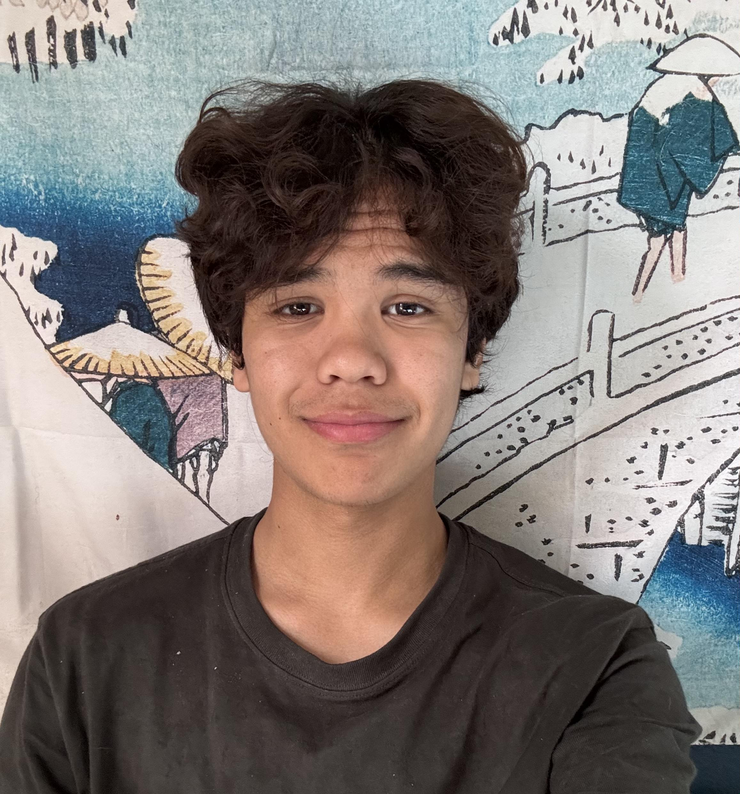

Hi, my name is Ivan Torriani and I'm a computer science and math major. My dream is to do computer science research in the industry, like at Google Research or Microsoft Research. I love working on big projects that interest me but also have some use for the broader community, so naturally I'm trying to become a great open source contributor. Right now, I'm working on creating my own LLM from scratch, which you can check out on the LLM blog. So far, I've pretrained 4 models on literature datasets and posted them on my hugging face. I'm also working on a project improving fertilization practices of vineyards with Computer Vision for a professor on campus. Soon, I want to start working on an open source voice model with natural conversation capabilites, as well as a canvas to visually communicate with users.
